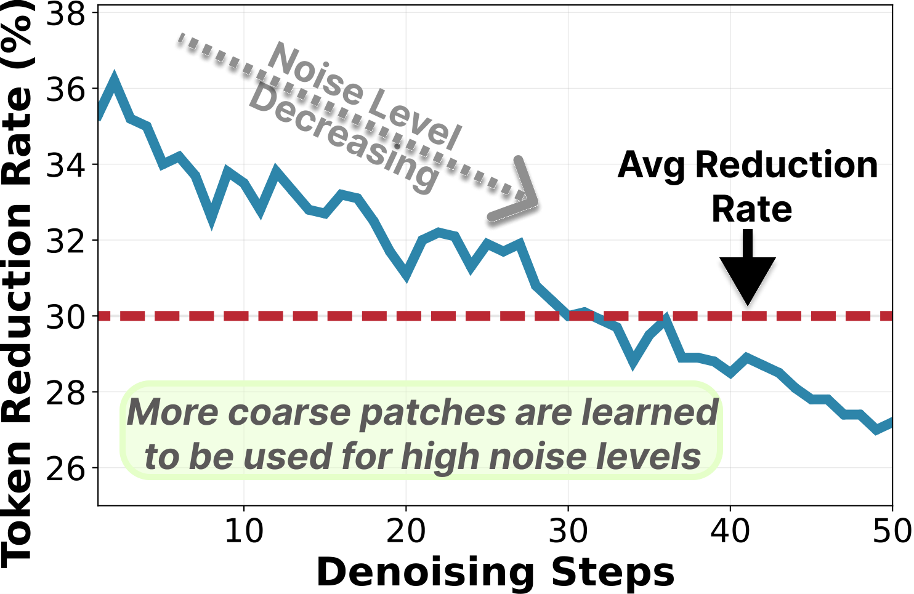
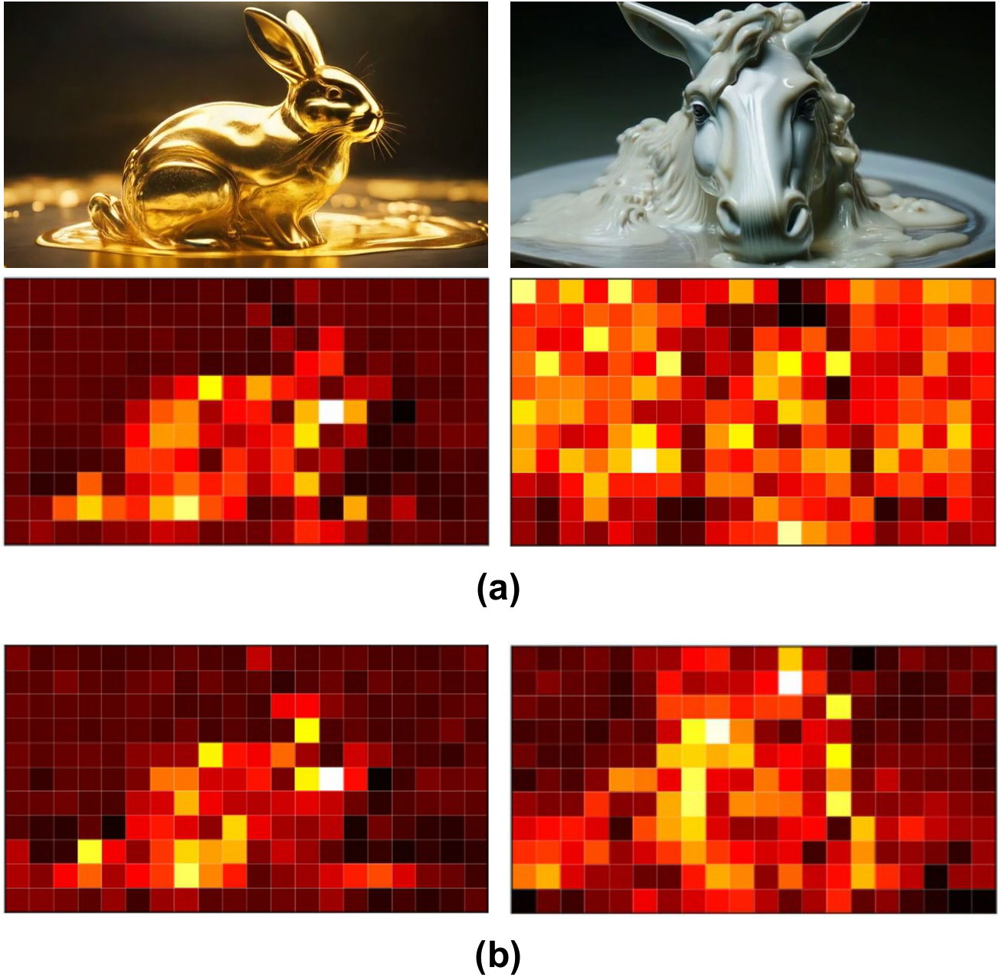
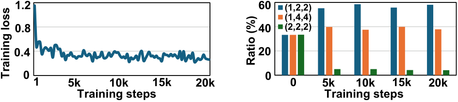

Video 01
Result
Add your video here
Prompt
[Add prompt here]
Project Website
DynaPatch learns content-aware spatiotemporal patch sizes directly from video latents, reducing redundant computation while preserving fidelity and temporal coherence.
* Work done while interning at Adobe.
Diffusion Transformers (DiTs) achieve strong video generation performance but suffer from prohibitive computation cost due to dense spatiotemporal tokenization. Most existing works rely on uniform patchification, tokenizing non-overlapping spatiotemporal regions with a fixed patch size regardless of the underlying content. This content-agnostic tokenization results in substantial redundant computation, especially in visually simple or static areas. To address this inefficiency while preserving video generation quality, we propose DynaPatch, a fine-grained dynamic patchification framework that adaptively selects patch sizes for each spatiotemporal region based on content complexity. A lightweight router predicts patch sizes directly from the latents encoded by a 3D Variational Autoencoder (VAE), and is jointly optimized with the diffusion model through diffusion loss, an attention-guided saliency alignment loss, and a token-budget regularizer. Learnable patchify and unpatchify layers integrate seamlessly with standard DiT backbones, allowing flexible tokenization without architectural changes. Experiments demonstrate that DynaPatch can effectively reduce redundant computations while preserving fine details, achieving 1.3-1.8x acceleration with minimal quality degradation.
Method
Two core figures for the routing design and training procedure.


Analysis
Quantitative and qualitative evidence for adaptive patch allocation.



Qualitative Study
All visualization figures are kept on this single page.


Template Area
I left prompt fields and video slots here so you can add your own videos later.
supplementary_material/data/videos/, then replace each
placeholder block below with a <video> tag and fill in the corresponding prompt text.
Prompt
[Add prompt here]
Prompt
[Add prompt here]
Prompt
[Add prompt here]
Prompt
[Add prompt here]
Prompt
[Add prompt here]
Prompt
[Add prompt here]